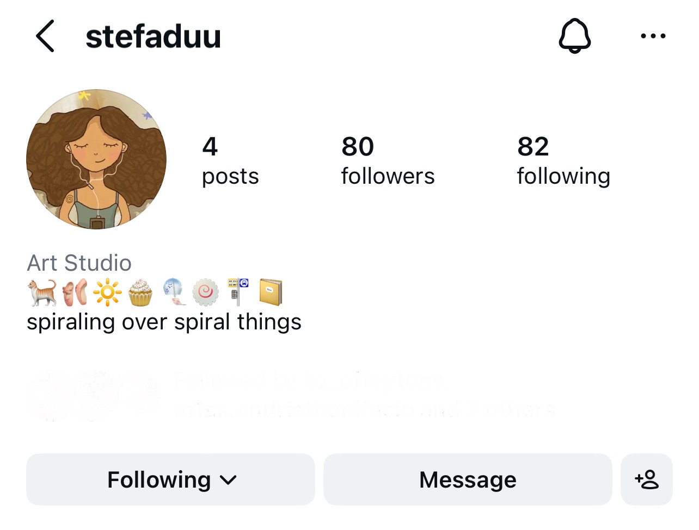
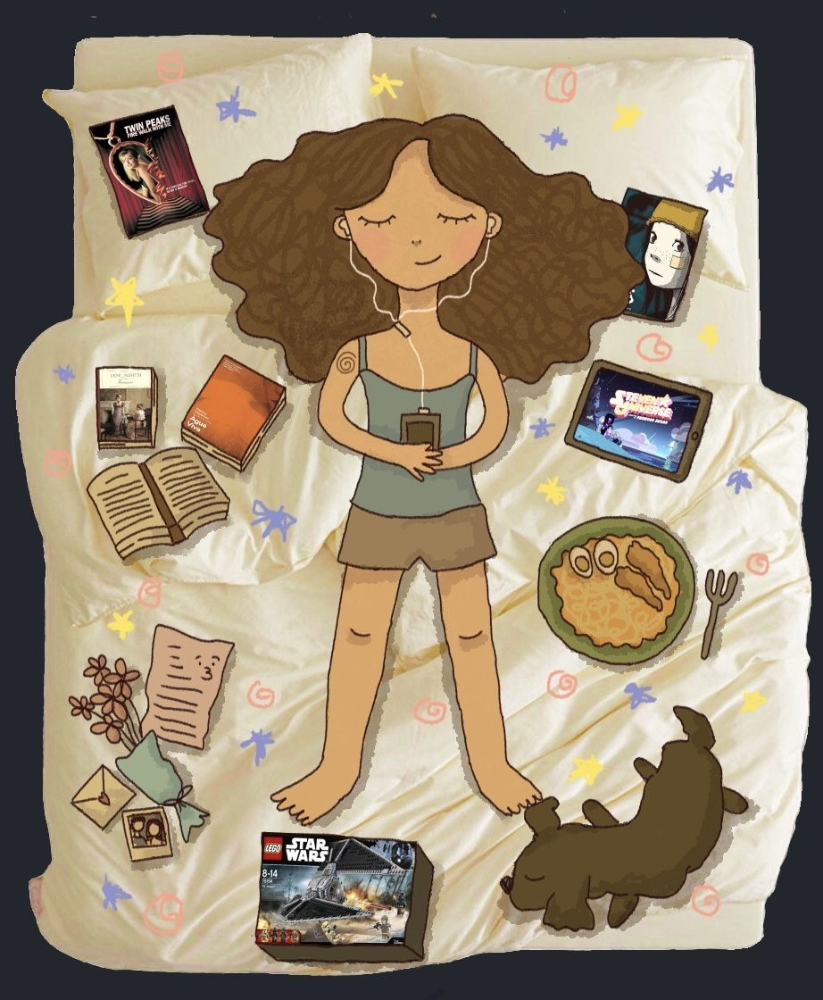
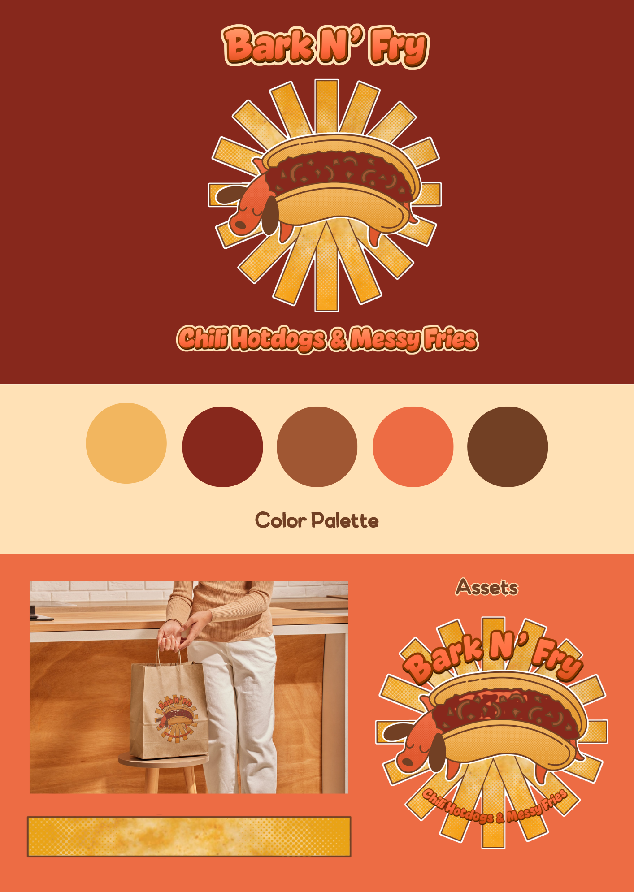

Hello everyone! I'm Steph, currently in her 2nd year
studying BA Multimedia Studies at UPOU. I'm an ambivert!
People often see me as either shy or a bit grumpy at
first (due to my resting face), but once I'm comfortable
with you, I can talk nonstop and be way more extroverted
than you'd expect.
As for my interests, they revolve around the arts, such
as graphic designing, traditional and digital art,
playing the guitar, and watching films. I don't have a
linear life path, meaning that I want to try and
experience all the things I want to in this lifetime.
I see no limit, so I'm willing to experience everything
full of love!
𖦹 Things I Love
Reading books! My current favorites are
Near to the Wild Heart,
The Perks of Being a Wallflower (TPOBAW),
Just Kids, Heaven, and
On Earth We're Briefly Gorgeous.
Watching films. My current top four on Letterboxd are
Her (2013), Twin Peaks: Fire Walk with Me (1992),
As I Was Moving Ahead Occasionally I Saw Brief Glimpses of Beauty
(2000), and Solanin (2010).
Doing art, traditionally and digitally.
If you want to see my art, check out my art account
@stefaduu on Instagram : )
Listening to music. I currently listen to Blood Orange,
Matt Maltese, Belle & Sebastian, Paramore, Her's, and Sufjan Stevens.
Playing video games: Stardew Valley, Life is Strange 1 & 2,
Telltale's Batman, The Sims, Spider-Man PS4, and Sally Face.
Taylor Russell (…though she's a person hehe).
Spirals
Warm, soft lights
Cartoon characters: Eeyore, Batman, and the Minions.
𖦹 Passion Projects
My Art Account (@stefaduu)
Welcome to @stefaduu, my personal art space and passion
project. It’s where I explore quiet stories and illustrations rooted in
whimsical, nostalgic, and melancholic vibes. I also share bits of my
academic work as a BAMS student in my Instagram Highlights. I take
custom commissions, but I’m not accepting any at the moment because
I’m currently busy with my internships.

My personal art space, @stefaduu.

A little glimpse into the things that inspire my art.
Beauty is Skin Deep: A Psychological Perspective on Aesthetic Experiences
An interactive, flippable digital zine about the psychological perception
of beauty and art. It brings together editorial layout design, clean
typography, custom colorful visuals, research, and reflection.
Zine Link:
I started this project to create free visual identities for small, local
businesses that deserve better than cookie-cutter AI visuals. Currently
working my way through a bunch of fun local concepts, starting the project
with Bark N' Fry (chili hotdogs & messy fries).

Bark N' Fry, the first local concept in Branding Glow-Ups!
𖦹 Contacts
For direct or more inquiries, feel free to contact me through my socials: